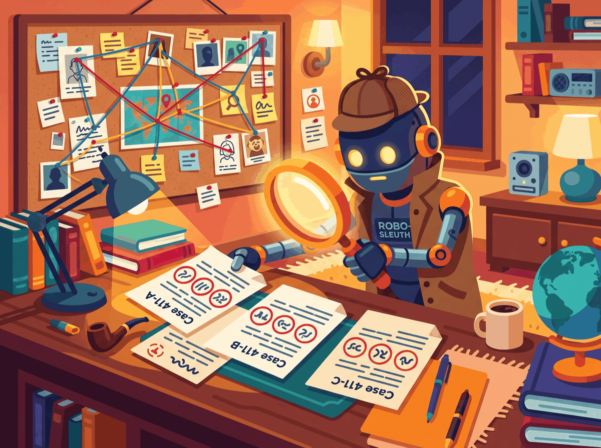

"An LLM ambient-scribe saves a physician fifteen minutes per visit. Multiply by patients per week and you have the deployment thesis in one number."
Token, Ambient-Scribe-Realist AI Agent
Healthcare is the LLM vertical where the productivity win is largest, the regulatory perimeter is sharpest, and the cost of a confident wrong answer is measured in patient harm rather than billable rework. Three reference deployments anchor the 2026 landscape: Google's Med-PaLM 2 (Singhal et al., 2023) demonstrated expert-level performance on MedQA and seeded the clinical-decision-support category, OpenEvidence became the most-cited physician-facing literature-synthesis tool with rapid adoption across U.S. teaching hospitals, and Hippocratic AI defined the patient-facing low-acuity tier with its published "do-no-harm" framework and constellation of named clinical agents. The regulatory frame is non-negotiable: HIPAA governs PHI handling end-to-end and requires Business Associate Agreements with every LLM vendor, while the FDA's Software-as-a-Medical-Device (SaMD) guidance pulls clinical-decision-support tools into device-clearance territory when they cross from informational to recommendation surfaces. Six categories of healthcare LLM work ship reliably by mid-2026: ambient clinical documentation, assistive clinical decision support, patient triage and education, medical coding, biomedical literature synthesis, and drug-discovery sequence modeling. The takeaway: the deployments that ship cleanly are the ones where the LLM accelerates a licensed clinician rather than replacing one, and where the HIPAA and SaMD posture is engineered in from day one.
Prerequisites
This section builds on the conversational-AI patterns from Chapter 37 and the privacy/security framework from Section 53.4. HIPAA-specific deployment patterns are covered later in this chapter.
Ambient Clinical Documentation
Microsoft's $19.7 billion 2022 acquisition of Nuance was the largest healthcare-AI deal in history, and it was made roughly six weeks before ChatGPT shipped. The deal looked overpriced to the financial press at the time; by mid-2024, with Dragon Copilot deployed in tens of thousands of hospitals, Microsoft analysts were quietly arguing the company had paid a discount. Timing is everything in healthcare M&A.

Far and away the most successful healthcare LLM application of 2024-2026. Patient-clinician conversations are recorded (with consent), transcribed, and converted to structured SOAP notes. Vendors: Abridge, Suki, DeepScribe, Microsoft Dragon Copilot (formerly Nuance DAX), and tight Epic integrations. Outcomes documented in peer-reviewed studies: 30-60% reduction in clinician documentation time, statistically significant reduction in burnout scores, neutral-to-positive impact on documentation quality. The pattern is so successful that "does your EHR have ambient AI?" became a routine RFP question by mid-2025.
An internal-medicine clinic at an academic medical center activates an ambient-scribe app (e.g., Dragon Copilot, Abridge, or Suki) before each patient visit, with the patient's verbal consent and visible "recording" indicator. During the 18-minute encounter, conversation audio streams to the vendor's HIPAA-eligible cloud, where a domain-tuned ASR model produces a verbatim transcript and an LLM converts it into a draft SOAP note: subjective from the patient narrative, objective from spoken vitals plus EHR pulls, an assessment of the differential, and a plan including pended orders, problem-list updates, and patient-instruction language. The clinician spends roughly 90 seconds editing and signs the note before leaving the room. Post-visit, the structured plan flows back into the EHR through FHIR or vendor-specific APIs, and the raw audio is purged per the BAA's retention schedule (typically 30-90 days; some institutions require 0-day retention). Published evaluations from Permanente, Stanford, and Kaiser report documentation-time reductions of 30-60% and statistically significant drops in clinician-burnout scores, with no degradation in coding accuracy when the LLM's output is reviewed before signature.
Clinical Decision Support (Assistive Only)
LLMs that synthesize a patient's chart and the relevant guidelines to surface "things the clinician might want to know about." Differential diagnosis suggestions, drug-interaction screening, guideline-adherence prompts. Used as cognitive scaffolding, not as decisional authority. Google DeepMind's Med-PaLM 2 (Singhal et al., 2023) and its Nature paper showing expert-level performance on MedQA were widely reported; the follow-up controlled studies showing clinicians using LLM assistance were no better than clinicians alone (because they discarded LLM suggestions when those conflicted with intuition) were less reported but more practically important. The locus of value is in catching omissions, not in being right when humans are wrong.
Glass Health and Hippocratic AI represent two different approaches to clinical decision support that have matured by 2026. Glass Health focuses on physician-facing decision support: a clinician describes a case in natural language and the system returns a differential-diagnosis ranking with citations to current evidence. The product is structured as a research and learning tool, not a recommendation engine, which keeps it out of FDA SaMD scope. Hippocratic AI takes the patient-facing angle for low-acuity tasks (medication adherence, post-discharge follow-up, chronic-disease check-ins) with explicit human-clinician oversight and a published "do no harm" framework that has become widely cited.
Patient-Facing Triage and Education
Symptom-checker chatbots, post-visit explanations, medication adherence reminders. Mature in the consumer wellness space (less regulated); slower in clinical deployment due to the FDA's evolving stance on whether such tools are medical devices. K Health, Ada Health, and several large payer-deployed virtual-health products use LLM components for the conversational layer while keeping the clinical assessment under licensed-clinician oversight.
Medical Coding and Revenue-Cycle Automation
Converting clinical notes into ICD-10, CPT, and HCC codes for billing. High-volume, deterministic-enough that LLMs work well; auditable enough that errors are catchable. One of the highest-ROI deployments because of how labor-intensive coding is. Vendors include large incumbents (3M Health Information Systems, Optum) and AI-first newcomers; the productivity gains reported in peer-reviewed studies range from 30 to 50 percent on routine coding work.
Biomedical Literature Synthesis
Researchers and physicians use LLMs to synthesize PubMed, ClinicalTrials.gov, and guideline literature. Quality of synthesis is high; quality of citation is the standard concern (always verify the cited paper exists and says what the LLM claims). The legal-industry citation-verification pattern (Layer 5 in Section 72.4) translates directly: programmatic resolution of every cited paper against PubMed or DOI is mandatory for any tool that ships to a clinical or research audience.
Drug Discovery and Protein Design
LLM-style sequence models on biological data (proteins, DNA, small molecules) have become standard. AlphaFold 3, ESM-3, RFdiffusion, and successor models are now routine tools in pharma R&D pipelines. This is computationally adjacent to LLMs but not the same product surface. The interesting frontier in 2026 is models that combine sequence reasoning with textual reasoning (papers, patents, clinical-trial summaries) to support drug-discovery workflows end-to-end; Isomorphic Labs, BioNTech subsidiaries, and several large-pharma internal teams have made progress in this direction.
Healthcare LLM economics break down differently than legal or finance. In legal and finance the productivity win flows to billable-hour professionals whose time was already expensive. In healthcare the productivity win flows largely to clinicians whose burnout was already costing the system in attrition and quality-of-care outcomes. Ambient documentation does not necessarily generate net revenue (the physician sees the same number of patients), but it dramatically reduces after-hours documentation work, which improves retention, which reduces the cost of replacing departing clinicians. The ROI calculation includes burnout reduction and turnover prevention, not just hours saved per shift. Several large health systems explicitly cite "reducing pajama time" as the load-bearing business case for ambient AI rollouts.
Two anchored numbers sit at the heart of healthcare LLM economics in 2026. First, capability: Google's Med-PaLM 2 (Singhal et al., 2023) scored 86.5 percent on the MedQA-USMLE benchmark, against roughly 67.6 percent for the GPT-4 baseline of the same era and an estimated 60 percent passing threshold for licensed U.S. physicians on equivalent items. By mid-2026 frontier general-purpose models (GPT-4o, Claude Opus, Gemini 2.x) report 88 to 92 percent on the same benchmark, putting clinical-knowledge retrieval reliably above the average-physician bar even without domain tuning.
Second, the ROI calculation for ambient documentation. A primary-care clinician at a typical U.S. health system completes roughly 20 encounters per day and spends 1.5 to 2 hours per day on after-hours charting ("pajama time"). At a fully-loaded clinician cost of $200/hour, that documentation overhead is $300-$400/day, or roughly $75,000-$100,000 per clinician-year of unbilled time. Ambient-scribe deployments at Permanente, Kaiser, and UPMC have published documentation-time reductions of 30-60 percent, translating to $22,000-$60,000 per clinician-year of recovered time. With per-clinician licensing at $150-$300/month ($1,800-$3,600/year), the payback is under 60 days per seat, and a 1,000-clinician deployment recovers roughly $30-$50M per year in time alone, before accounting for retention and burnout savings.
- Chapter 32 (Retrieval-Augmented Generation) for the grounded-retrieval pattern that underpins biomedical literature synthesis and clinical-decision support.
- Chapter 37 (Conversational AI) for the ambient-documentation and patient-facing chat stack.
- Chapter 42 (Evaluation Foundations) for the benchmark methodology that produced MedQA-USMLE-style numbers.
- Section 50.1 (Privacy Attacks) for the membership-inference and extraction threats that make HIPAA architecture mandatory.
- Section 72.4 (Verified RAG) for the citation-verification pattern reused for biomedical literature synthesis.
Show Answer
Show Answer
Show Answer
Show Answer
What Comes Next
Section 74.2 turns to the failure modes specific to healthcare: confident wrong answers in high-stakes contexts, demographic bias, and the privacy-leakage exposure that makes HIPAA architecture mandatory.
What's Next?
In the next section, Section 74.2: Failure Modes Specific to Healthcare, we build on the material covered here.